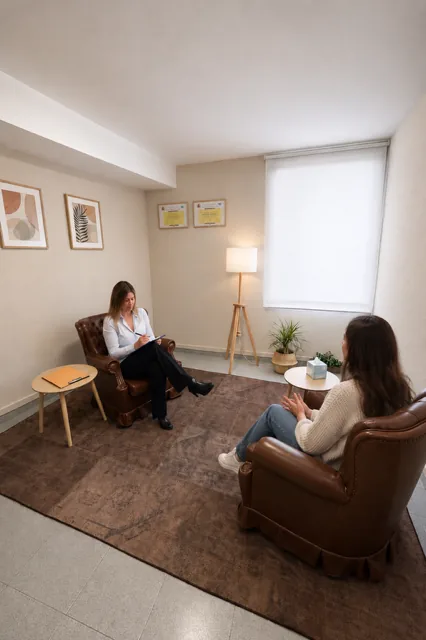

Ansietat i estrès
Preocupació excessiva, anticipació constant, crisis d'ansietat, tensió física, dificultat per desconnectar.
Teràpia individual · Adults i adolescents
Sessions presencials a Girona o online. Comencem per on tu puguis, no per on digui un manual. No necessites arribar sabent què et passa.

No és una llista de diagnòstics, sinó de situacions amb què les persones arriben a consulta. Pots reconèixer-te en una, en diverses o en cap i venir igualment.
Preocupació excessiva, anticipació constant, crisis d'ansietat, tensió física, dificultat per desconnectar.
Tristesa sostinguda, apatia, desmotivació, sensació de funcionar en automàtic.
Autocrítica dura, por al judici dels altres, sensació de no ser suficient.
Exigir-te més del que exigiries a qualsevol. Procrastinació per por de no fer-ho bé.
Pèrdues, separacions, mudances, canvis d'etapa, moments en què cal recol·locar-se.
Dependència emocional, dificultat per dir que no, culpa en posar límits, patrons que es repeteixen.
Emocions que arriben amb massa intensitat o que no aconsegueixes identificar.
Ansietat, autoestima, relacions, conflictes familiars, gestió d'emocions i de l'estudi. Amb la família implicada quan cal.
La primera sessió és una conversa. M'expliques la teva situació i parlem del que t'ha portat a consultar. Al final tindràs una idea de com ho podríem treballar. No cal preparar res.
A partir d'aquí definim objectius i escollim eines. Pot ser psicoeducació per entendre què està passant al teu cos, treball amb pensaments automàtics, defusió cognitiva, regulació emocional, respiració, valors, límits o aferrament. Depèn de tu, no d'una plantilla.
Revisem el procés pel camí. Si alguna cosa no funciona, es canvia. I quan el que s'ha treballat se sosté, consolidem perquè es mantingui fora de consulta.
La freqüència s'acorda segons el moment del procés. No dono terminis tancats: depenen del que portis i del teu ritme.
No hi ha un llindar mínim. Si t'ocupa el cap més del que voldries o fa temps que intentes resoldre-ho pel teu compte sense avançar, ja és motiu suficient.
És el més habitual. Posar nom al que passa forma part de la feina, no és un requisit per començar-la.
Sí, sempre que puguis connectar-te des d'un espai amb intimitat. L'estructura de treball és la mateixa.
És freqüent. Ho podem parlar abans per WhatsApp o correu per veure com plantejar-ho sense forçar la situació.
Pots reservar la primera sessió, presencial a Girona o online. Si prefereixes preguntar abans, també.
Prefereixes preguntar-me abans? WhatsApp 629 179 175 · debgirona@gmail.com